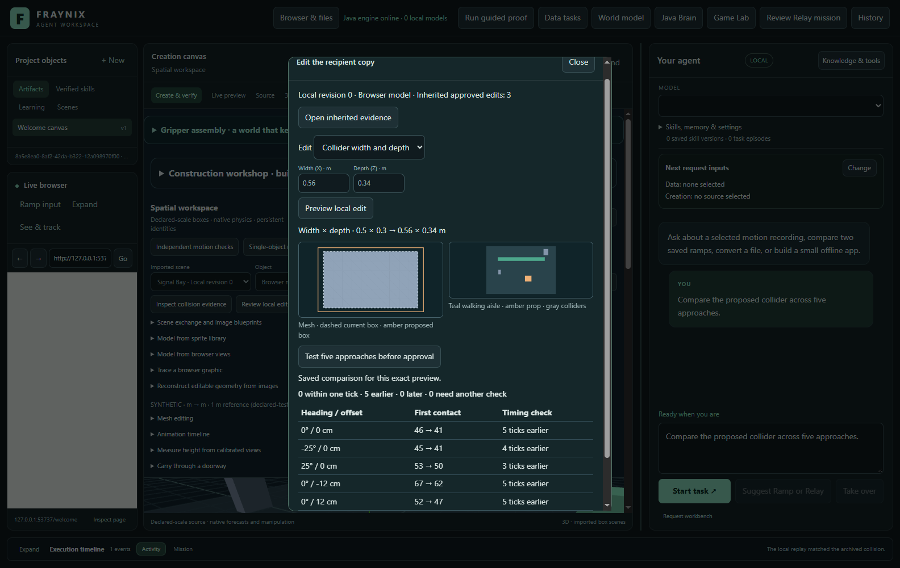
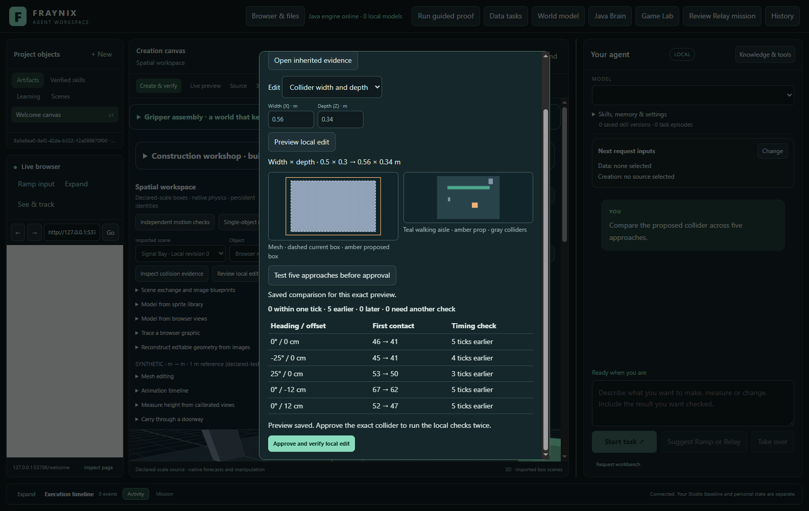
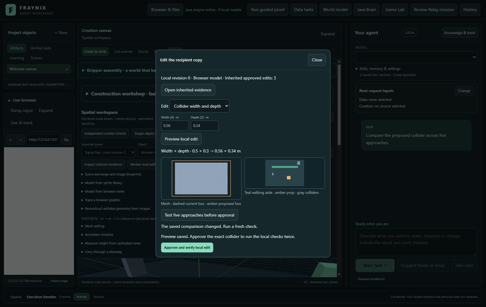

Test a proposed collider before approval
Run a five-approach comparison with a pending proposal, inspect its timing changes, and approve when it fits your goal.

Chat ran the comparison on the exact pending proposal

Reopened comparison and the separate approval action

An altered result is withheld from the pending review
System files
Open source